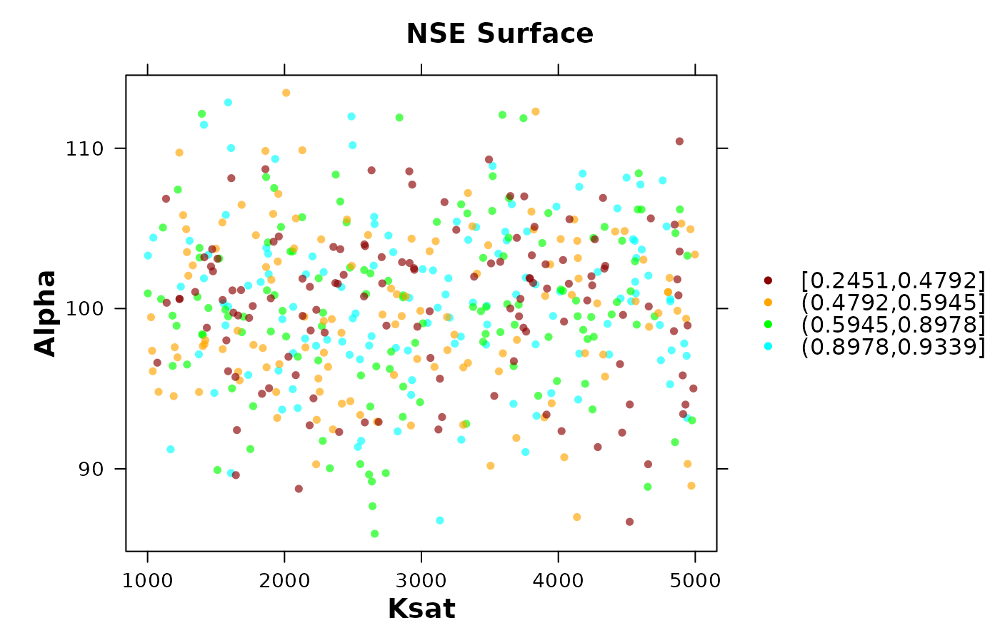
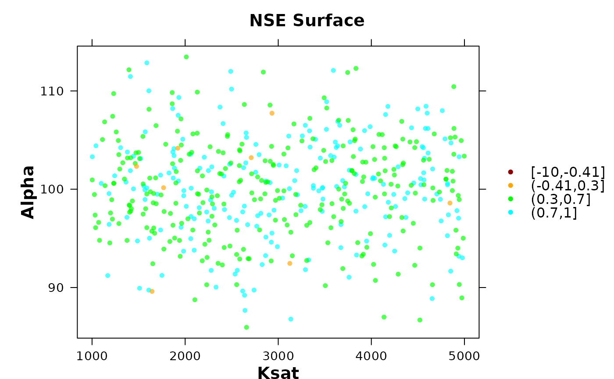

Bivariate Parameter-Objective Function Diagnostic Plot for Hydrological Calibration
plot_2parOF.RdProduces a scatter-based diagnostic plot to explore the relationship between two model parameters and a goodness-of-fit (GOF) metric.
This function is particularly useful in hydrological modelling to assess parameter interactions, equifinality, and behavioural regions after calibration or Monte Carlo simulation.
Usage
plot_2parOF(params, gofs, p1.name, p2.name, type="sp", MinMax=c("min","max"),
gof.name="GoF", main=paste(gof.name, "Surface"), GOFcuts,
colorRamp= colorRampPalette(c("darkred", "red", "orange", "yellow",
"green", "darkgreen", "cyan")), points.cex=0.7, alpha=0.65,
axis.rot=c(0, 0), auto.key=TRUE, key.space= "right")Arguments
- params
A numeric matrix or data.frame containing model parameter sets. Each row represents one simulation.
- gofs
A numeric vector containing the goodness-of-fit metric corresponding to each parameter set (in
params, and in the same order!).- p1.name
character, name of the 1st parameter to be plotted
- p2.name
character, name of the 2nd parameter to be plotted
- type
character, type of plot. Valid values are:
-) sp: spatial plot.
-) scatter3d: 3d scatterogram.
- MinMax
character, indicates whether the optimum value in
gofscorresponds to the minimum or maximum of the objective function. Valid values are in:c('min', 'max').By default,
MinMax='min'which plot particles with lower goodness-of-fit values on top of those with larger values, in each one of the output figures.- gof.name
character, used as the legend title for the goodness-of-fit metric.. It has to correspond to the name of one column of
params.- main
character with the title for the plot
- GOFcuts
numeric, specifies at which values of the objective function given in
gofsthe colours of the plot have to change.If
GOFcutsis missing, the interval for colours change are automatically defined by the (unique values of the) five quantiles ofgofs, computed byfivenum.- colorRamp
R function defining the colour ramp to be used for colouring the pseudo-3D dotty plots of Parameter Values, OR character representing those colours
- points.cex
size of the points to be plotted
- alpha
numeric between 0 and 1 representing the transparency level to apply to
colorRamp, ‘0’ means fully transparent and ‘1’ means opaque- axis.rot
numeric vector of length 2 representing the angle (in degrees) by which the axis labels are to be rotated, left/bottom and right/top, respectively.
- auto.key
logical, indicates whether the legend has to be drawn or not
- key.space
character, position of the legend with respect to the plot
Details
This function is designed for post-calibration diagnostics in hydrological modelling workflows. It allows the user to visually inspect how two parameters jointly influence model performance.
When a threshold (GOFcuts) is provided, simulations can be visually separated into behavioural and non-behavioural sets using different levels of performance, which is useful in GLUE-style analyses and uncertainty assessment.
The plot can reveal:
Parameter interaction patterns
Trade-offs between parameters
Regions of acceptable model performance
Signs of equifinality
Value
This function only produces a lattice-based figure with the values of the objective function in a two dimensional box, where the boundaries of each parameter are used as axis. It does not return a structured object.
Examples
# Example: Hydrological calibration diagnostic
set.seed(123)
# Generate synthetic parameter sets
n <- 500
params <- data.frame(
Ksat = runif(n, 1000, 5000),
Alpha = rnorm(n, mean=100, sd=5)
)
# Simulated goodness-of-fit (e.g., NSE-like)
gofs <- rnorm(n, mean=0.5, sd=0.1)
gofs[1:200] <- rnorm(200, mean=0.9, sd=0.01)
# Plot without threshold
plot_2parOF(params, gofs, p1.name="Ksat", p2.name="Alpha",
gof.name = "NSE")

# Plot with behavioural threshold
plot_2parOF(params, gofs, p1.name="Ksat", p2.name="Alpha",
gof.name = "NSE", GOFcuts = c(-10, -0.41, 0.3, 0.7, 1))
